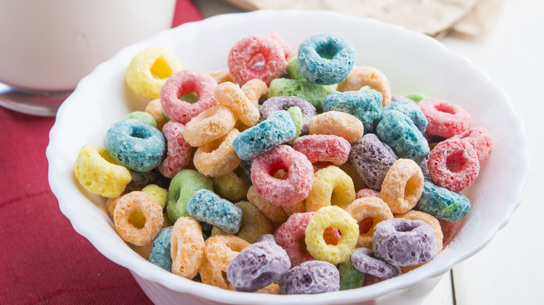

Return home
Cereal Recipe

Description
This is a very simple cereal recipe and takes about 30 seconds to make.
Ingredients
- Froot Loops cereal (or Cinnamon Toast Crunch)
- Milk
Steps
- Add cereal to a bowl.
- Add milk to the bowl.
- Place spoon inside the bowl.